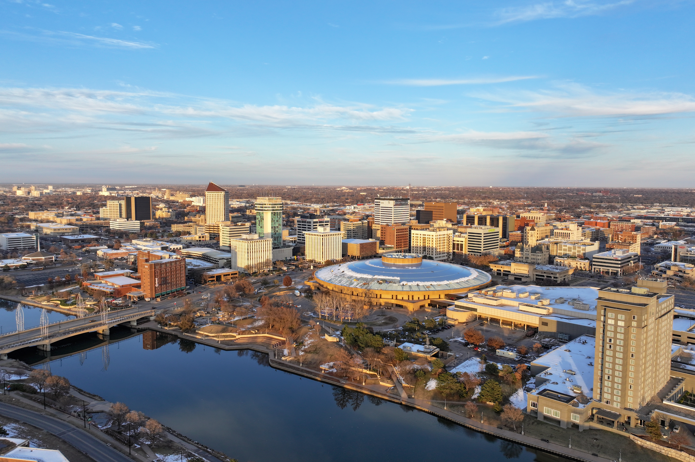

Photo: Quintin Soloviev - Own work, Link
Wichita is the largest city in Kansas, incorporated in 1870. It is situated in the south-central part of the state. Source: Wichita Wikipedia page
The population of Wichita is 396,119 according to the US Census. Source
The median income is $63,072 according to the US Census. Source This is $9,567 less than the Kansas median, which is $72,639 according to the US Census. Source: US Census